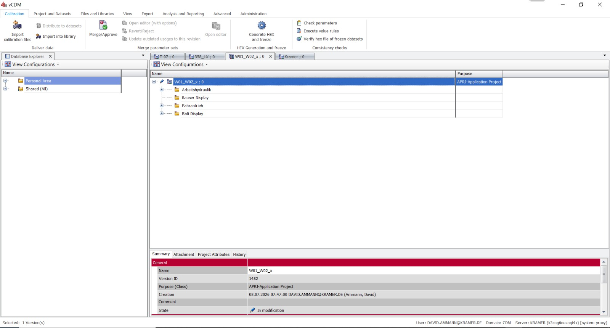
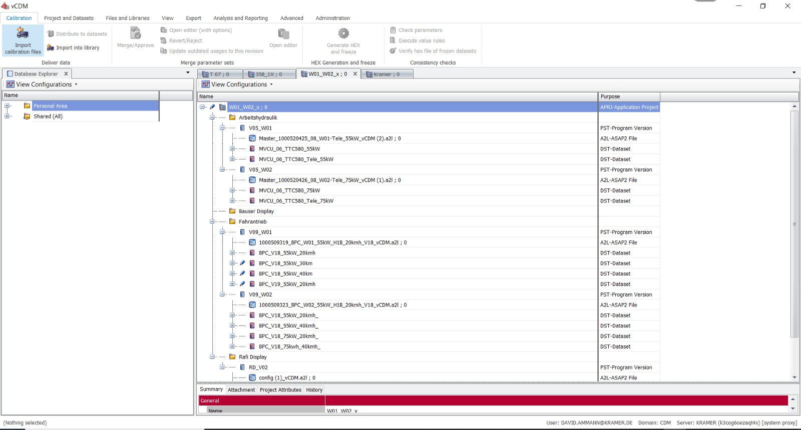
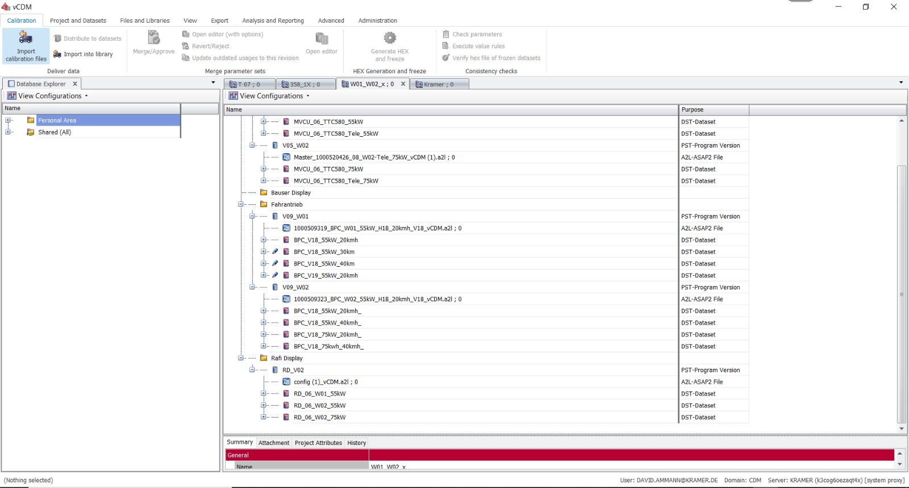
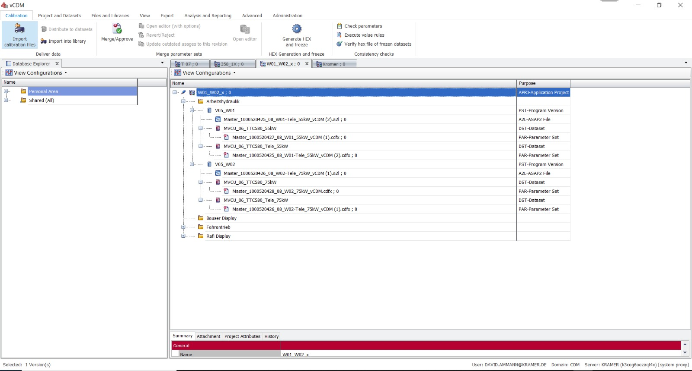

01 Projektkontext
Fahrzeugprojekt als Einstieg
Ein Projekt bündelt die relevanten Datenstände und schafft den Rahmen, in dem Software, Varianten und Parameter eindeutig zugeordnet werden.
03 Anwendung & Lösung
Die Screenshots zeigen beispielhaft, wie ein Fahrzeugprojekt in vCDM aufgebaut, navigiert und über Datensätze, Varianten und Freigaben nachvollziehbar gemacht werden kann.

Ein Projekt bündelt die relevanten Datenstände und schafft den Rahmen, in dem Software, Varianten und Parameter eindeutig zugeordnet werden.

Die Ansicht macht deutlich, welche Datensätze zu einem Projekt gehören und welche Informationen für Entwicklung, Qualität oder Service relevant sind.

Versionen und Bearbeitungsstände können direkt am Datensatz eingeordnet werden. Dadurch wird transparent, welcher Stand wofür genutzt wurde.

Freigegebene Stände können gezielter weitergegeben, verglichen oder in nachgelagerte Prozesse wie den Parameter Converter übernommen werden.
Parameterstände sind projekt- und fahrzeugbezogen auffindbar, statt über Ablagen und Dateinamen gesucht werden zu müssen.
Versionen, Varianten und Freigaben machen sichtbar, welcher Stand zu welchem Software- und Fahrzeugkontext gehört.
Freigegebene Datensätze können kontrollierter für Entwicklung, Service oder den Parameter Converter genutzt werden.